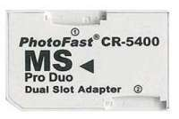
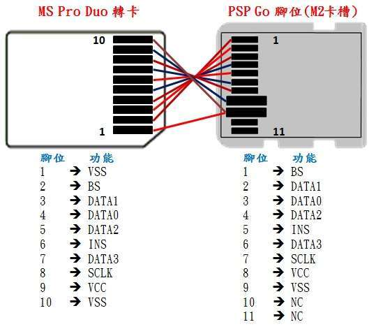
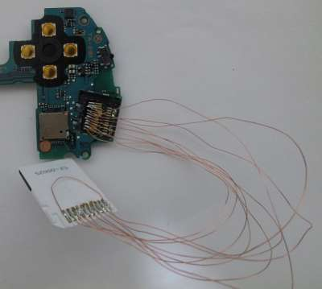
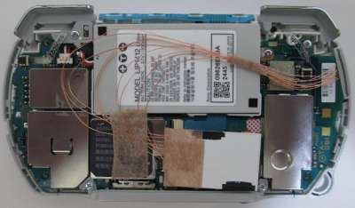
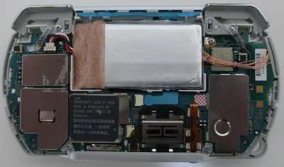
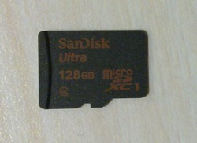
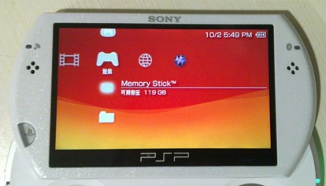

PSP Go掌機相當輕巧，適合隨身攜帶外出遊玩，不過它使用的記憶卡卻是比較昂貴的M2記憶卡，該類記憶卡除了容量不夠大之外，最重要的一點就是單價比較昂貴，相對地，MicroSD卡則是具有較高容量和較低價格的諸多優點，而目前網路上已經有相當多的MS Pro Duo卡轉MicroSD卡的卡套，該卡套的出現拯救了PSP掌機長期以來的容量不足問題，因為MS Pro Duo卡的價格以及容量都跟M2記憶卡很相似，既然這種卡套有這樣的優點，司徒當然要好好使用它，因此，司徒嘗試焊接MS Pro Duo卡套到PSP Go掌機身上，藉此取代M2記憶卡並讓PSP Go掌機具有更大的儲存空間，該MS Pro Duo卡套如下圖所示






